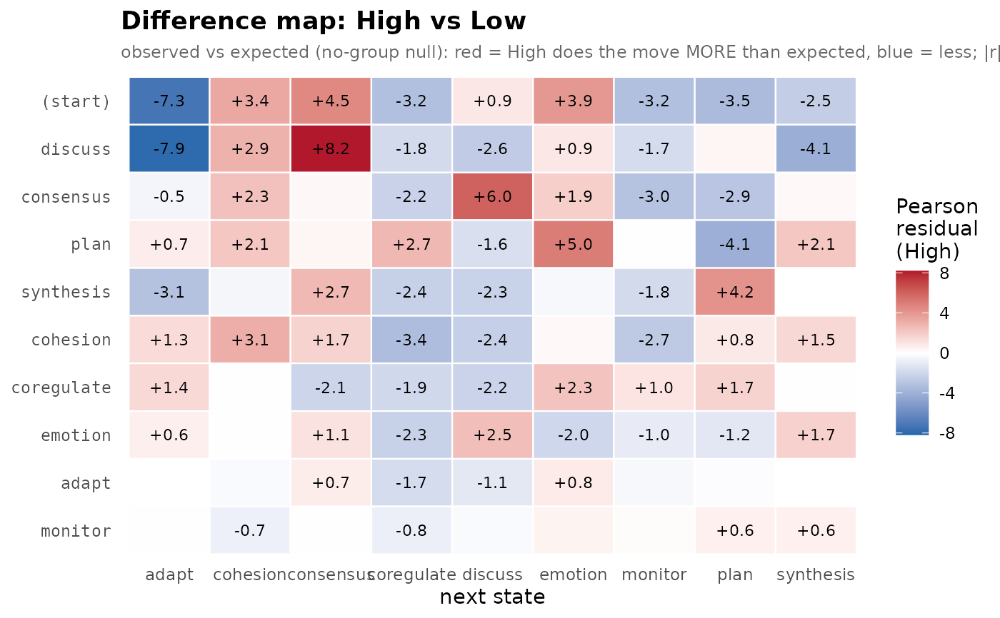
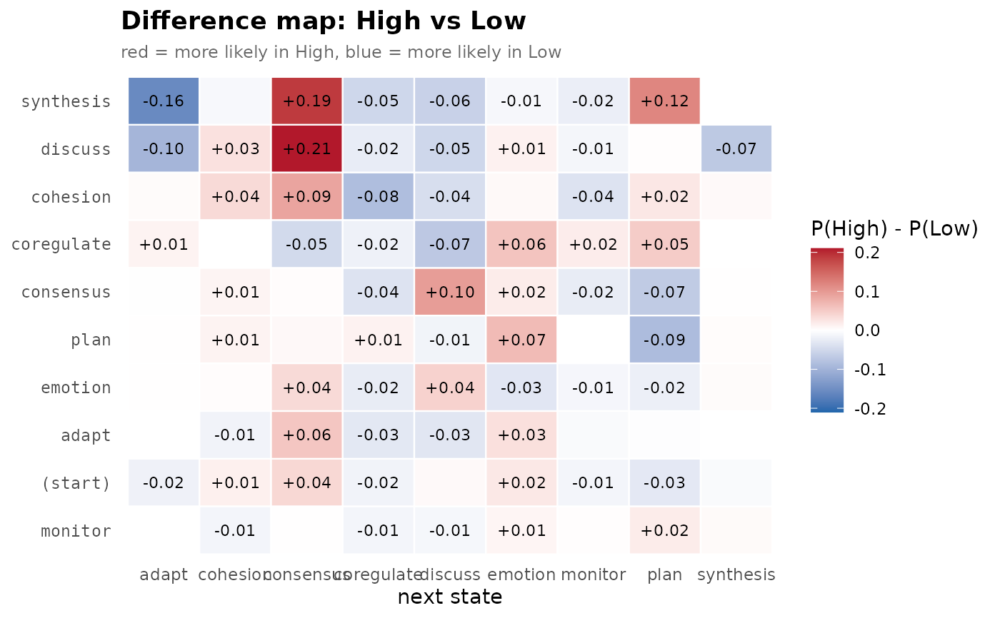
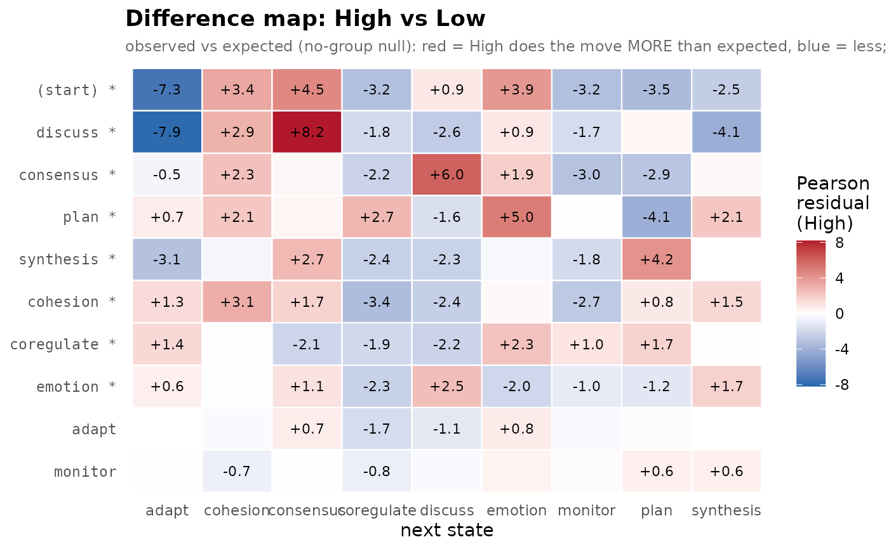
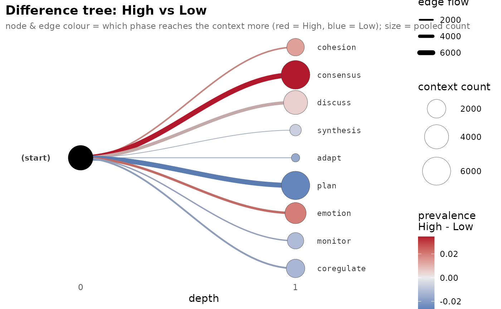

plot_difference() maps the next-state differences between two groups
of a transitiontrees_group: where the groups share a history and still
continue from it differently. The map has one row per context the groups
share and one column per next state. With depth = 1 the map is the
difference between the two first-order transition matrices; deeper contexts
show whether the difference depends on a longer history.
By default each cell is the Pearson residual of the first group's count
of that next state against the count expected if both groups continued
alike from that context, \((O - E) / \sqrt{E}\), with \(E\) from
the margins of the context's two-group table. Residuals take the
context's count into account, and an absolute value above about 2 is
notable. measure = "probability" shows the plain difference of
next-state probabilities instead. Rows are ordered by their total
absolute difference, largest at the top. With a
compare_groups() result as comparison, contexts
with a significant behavioral difference are starred.
layout = "tree" draws a different quantity: the context tree of
the pooled sequences, each node and branch colored by which group
reaches that context more often, as a share of the group's
observations. The map describes differences; the permutation tests are
in compare_groups().
Arguments
- group
A
transitiontrees_groupobject.- groups
The two groups to compare, first minus second. Default
NULL: the two groups of a two-group object; required for more groups.- depth
Only contexts of this depth. Default
NULL: all shared contexts.- min_count
Contexts with a count below this in either group are dropped. Default 1.
- comparison
A
transitiontrees_group_comparisonfromcompare_groups(), used to star contexts withjsd_padj < alpha. DefaultNULL.- alpha
False discovery rate cutoff for the stars. Default 0.05.
- annotate
Print the value in each cell (
"tile"only). DefaultTRUE.- layout
"tile"(default) for the heatmap, or"tree"for the pooled tree colored by prevalence difference.- measure
For
"tile":"residual"(default) or"probability".
Value
A ggplot object: a heatmap of contexts by next states, or a tree colored by prevalence difference.
Conditions
transitiontrees_bad_input(error)
groupis not atransitiontrees_group;groupsis missing for more than two groups or does not name two of them; no context is shared atdepthandmin_count;comparisonis not atransitiontrees_group_comparison.transitiontrees_empty_result(error) for
layout = "tree", the pooled tree is empty.
See also
compare_groups() for the tests;
plot.transitiontrees_group for each group's tree.
Examples
grp <- context_tree(group_regulation_long, actor = "Actor", time = "Time",
action = "Action", group = "Achiever", max_depth = 1)
plot_difference(grp)

plot_difference(grp, measure = "probability")

plot_difference(grp, comparison = compare_groups(grp, iter = 20),
alpha = 0.1)

plot_difference(grp, layout = "tree")
